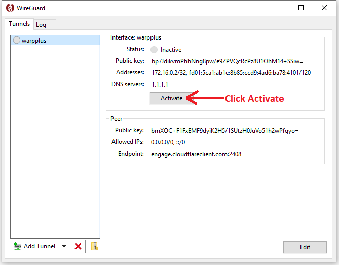
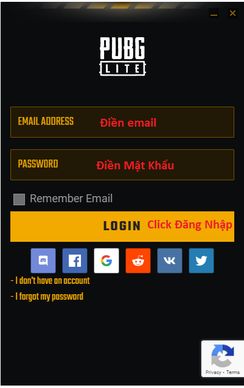

Hướng Dẫn Chơi PUBG Lite PC
Sau khi click mở game sẽ hiện bảng WireGuard và bảng Đăng Nhập.
1. Click Activate ở bảng WireGuard để fake IP quốc tế.

2. Điền email và mật khẩu, nhấn LOGIN để vào game.
Nếu chưa có tài khoản thì click "i don't have an account" để đăng ký tài khoản
hoặc vào "Kho Acc Free lấy acc free chơi."
